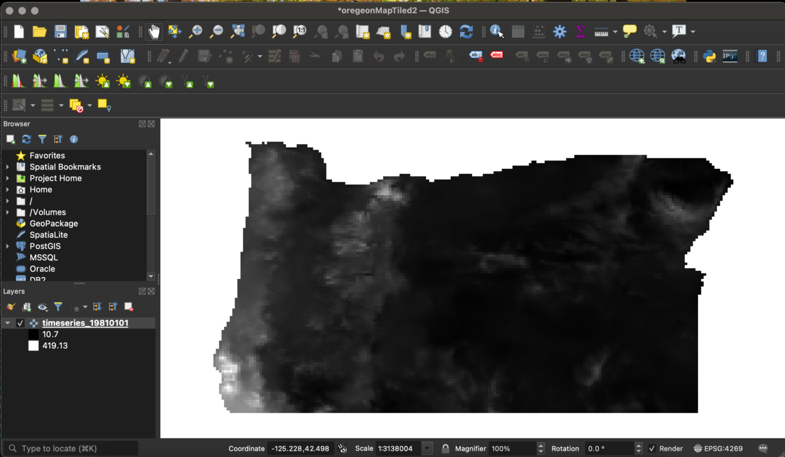
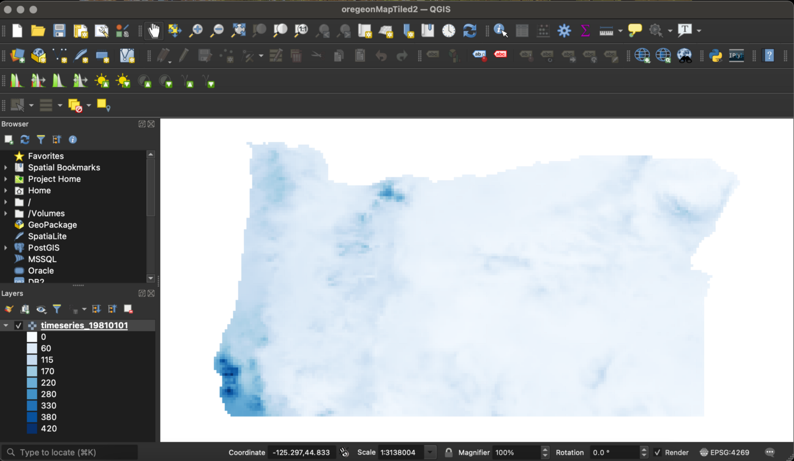
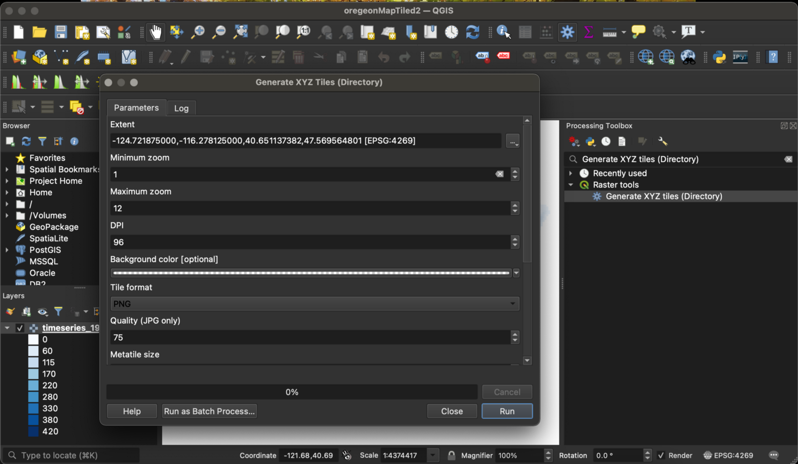

This is the fourth part in a series used to build my website: https://davidjleifer.com/
Part 1: https://www.davidjleifer.com/blogs/part1.html
Part 2: https://www.davidjleifer.com/blogs/part2.html
Part 3: https://www.davidjleifer.com/blogs/part3.html
Part 5: https://www.davidjleifer.com/blogs/part5.html
Part 6: https://www.davidjleifer.com/blogs/part6.html
Part 7: https://www.davidjleifer.com/blogs/part7.html
Part 8: https://www.davidjleifer.com/blogs/part8.html
Part 9: https://www.davidjleifer.com/blogs/part9.html
Over the summer, I began playing with Geoserver and the possibilities with the tech is quite expansive. Shout out to www.nhuthehoang.com for helping me setup the initial server.
In Part 1, we set up a WMS on Geoserver to host a timeseries of GeoTiffs of Oregon Precipitation. An important hiccup emerged when using calls to the server to render our timeseries: it was slow. And not just kind of slow. The type of slow that makes people leave your web application. I could list a bunch of statistics here about how if your application is slow, people will leave your web application, but I will spare you the details.
Today we will be using “Generate XYZ tiles (Directory)” to create a map tile of a single Oregon Precipitation raster GeoTiff. The data is saved as PNG and will speed up the web app display. This tool also outputs an HTML file containing Leaflet code to display the map tile. We will upload this HTML file and the corresponding map tile to Geoserver’s WWW folder.
Step 1: Download the Oregon Precipitation Data, Open in QGIS, and Symbolize the Raster
Download the data for this tutorial through this Google Drive link: https://drive.google.com/file/d/1jhjpxTBNRWRh6pBo1yOCaZdBMHBVe8hi/view?usp=sharing
Unzip and drag/drop the file into QGIS 3.10 or higher. Should look like this:

We will then adjust the symbology by double clicking the layer, clicking on the Symbology tab, and changing the “Render Type” from “Singleband Grey” to “Singleband pseudocolor”. Adjust “Label Precision” to “0” and click “Classify”. Change the classification to even numbers and press “Ok”. Should look something like this (you may have to change the color to this color scheme but my QGIS defaults on white to blue):

Step 2: Use “Generate XYZ tiles (Directory)” to Create Map Tiles
Go to the “Processing Menu” and click “Toolbox”. In the “Search” box, type “Generate XYZ tiles (Directory)”. Click the button and it will bring up the tool’s dialog box. In “Extent” choose the “Use Map Canvas Extent” from the drop down options. Change “Minimum Zoom” to 1 and set the “Output directory” and “Output html (Leaflet)” to paths that are agreeable and press “Run”.

Step 3: Get the Data onto Geoserver WWW folder
From GCP homepage that you setup in Part 1, navigate to your server and press the Connect: SSH button. This will bring up your Ubuntu server terminal. Navigate to the WWW folder:
cd /var/lib/tomcat8/webapps/geoserver/data/www
Make a new folder to house our map tile data:
sudo mkdir localdata
Now you can compress and upload your map tile data to Google drive, make the file have a shareable link, and download it to the server by modifying the command below. A preferable method would be to SSH from the Google Cloud Platform Ubuntu server to your local drive and upload the data that way. Or you could just use the following command to download the data that I have prepared:
sudo wget --load-cookies /tmp/cookies.txt "https://docs.google.com/uc?export=download&confirm=$(wget --quiet --save-cookies /tmp/cookies.txt --keep-session-cookies --no-check-certificate 'https://docs.google.com/uc?export=download&id=1Vfv17IrcMsxoxQy4rNVs7rVw_RDBtj4x' -O- | sed -rn 's/.*confirm=([0-9A-Za-z_]+).*/\1\n/p')&id=1Vfv17IrcMsxoxQy4rNVs7rVw_RDBtj4x" -O OregonMapTile && rm -rf /tmp/cookies.txt
Unzip the file and navigate back to the parent WWW directory.
sudo unzip OregonMapTile cd ..
Now we will create an HTML file.
sudo touch oregeonMapTiled3.html sudo nano oregeonMapTiled3.html
This will open the HTML file in nano. Copy over a modified version of the output HTML generated in QGIS (Step 2). Here is the full code:
<!DOCTYPE html>
<html>
<head>
<title>Leaflet Preview</title>
<meta charset="utf-8" />
<meta name="viewport" content="width=device-width, initial-scale=1.0">
<link rel="stylesheet" href="https://unpkg.com/leaflet@1.5.1/dist/leaflet.css"
integrity="sha512-xwE/Az9zrjBIphAcBb3F6JVqxf46+CDLwfLMHloNu6KEQCAWi6HcDUbeOfBIptF7tcCzusKFjFw2yuvEpDL9wQ=="
crossorigin=""/>
<script src="https://unpkg.com/leaflet@1.5.1/dist/leaflet.js"
integrity="sha512-GffPMF3RvMeYyc1LWMHtK8EbPv0iNZ8/oTtHPx9/cc2ILxQ+u905qIwdpULaqDkyBKgOaB57QTMg7ztg8Jm2Og=="
crossorigin=""></script>
<style type="text/css">
body {
margin: 0;
padding: 0;
}
html, body, #map{
width: 100%;
height: 100%;
}
</style>
</head>
<body>
<div id="map"></div>
<script>
var map = L.map('map').setView([44.11035109149999, -120.49999999999997], 6.5);
L.tileLayer('/geoserver/www/localdata/{z}/{x}/{y}.png', {
minZoom: 1,
maxZoom: 12,
tms: false,
attribution: 'Generated by TilesXYZ'
}).addTo(map);
</script>
</body>
</html>Step 4: View the Goods
Point your browser to:
http://XX.XXX.XXX.XXX:8080/geoserver/www/oregeonMapTiled3.html
There are probably other ways to do this, and I intend to discover them. Perhaps using the MBTiles extension? https://docs.geoserver.org/stable/en/user/community/mbtiles/installing.html
#RasterNotMonster
Part 1: https://www.davidjleifer.com/blogs/part1.html
Part 2: https://www.davidjleifer.com/blogs/part2.html
Part 3: https://www.davidjleifer.com/blogs/part3.html
Part 5: https://www.davidjleifer.com/blogs/part5.html
Part 6: https://www.davidjleifer.com/blogs/part6.html
Part 7: https://www.davidjleifer.com/blogs/part7.html
Part 8: https://www.davidjleifer.com/blogs/part8.html
Part 9: https://www.davidjleifer.com/blogs/part9.html